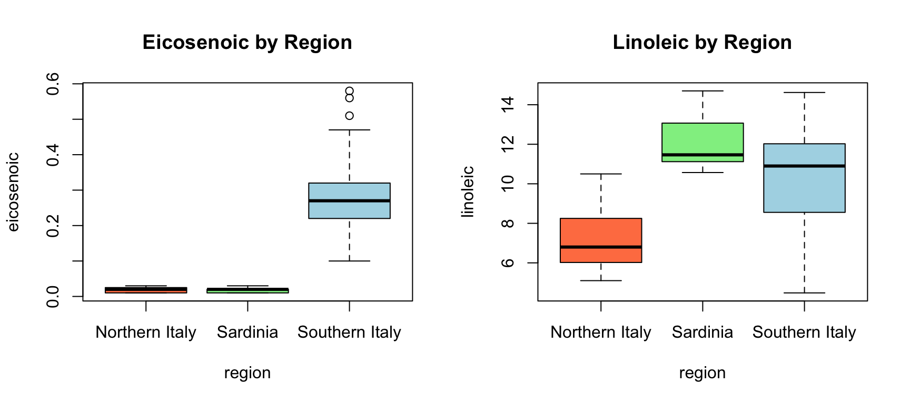
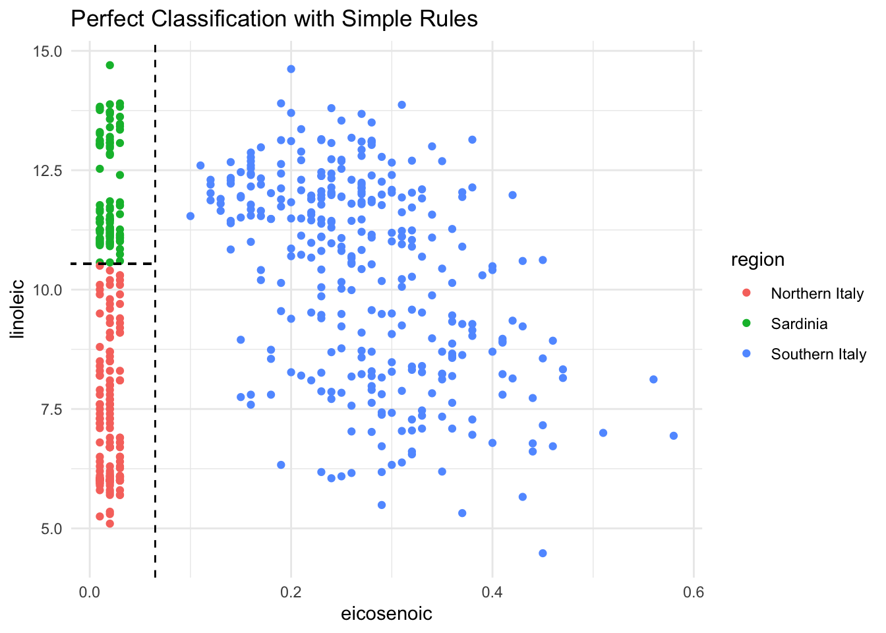
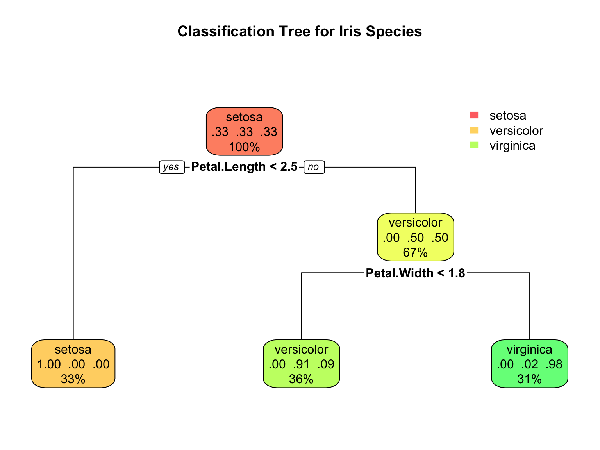
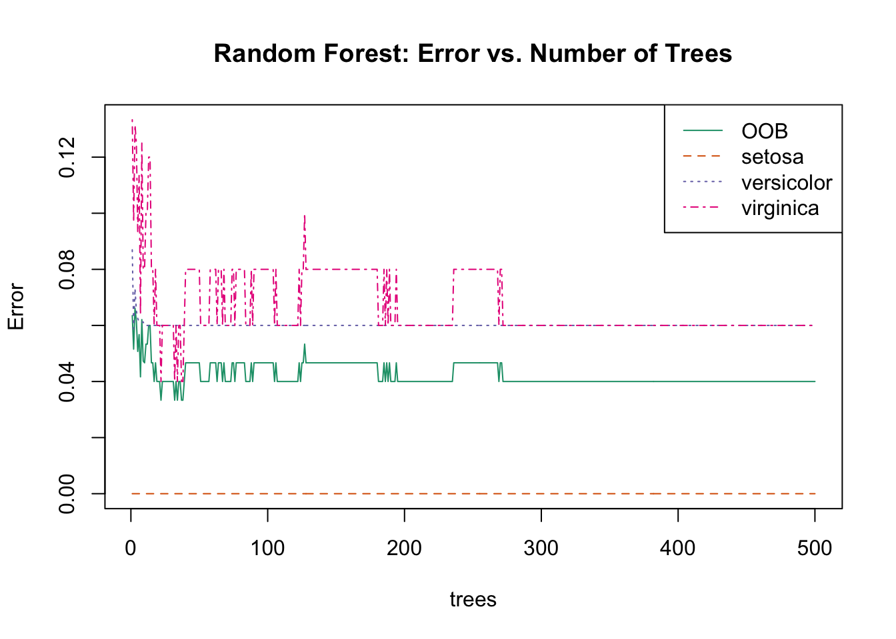

Decision trees are a fundamentally different approach to prediction. Instead of fitting a smooth function or finding nearest neighbors, trees partition the feature space into rectangular regions and make a simple prediction within each region.
Trees are popular for several compelling reasons. They are highly interpretable—you can draw a tree as a flow chart and explain it to non-statisticians who may never have taken a statistics course. They handle both numeric and categorical predictors naturally, without requiring dummy variables or other transformations. They capture non-linear relationships and interactions automatically through their recursive splitting structure. And they are robust to outliers and don’t require feature scaling, since only the rank order of values matters for splitting.
However, individual trees have high variance and are prone to overfitting. Random forests address this limitation by averaging many trees together, dramatically improving prediction accuracy at the cost of some interpretability.
Figure 34.1 shows a bioengineering application of decision trees: predicting musculoskeletal injury risk based on physiological factors. The tree structure makes the decision process transparent—you can trace the path from root to leaf and understand exactly why a particular prediction was made. Each internal node asks a yes/no question (Is BMI ≥ 30? Is exercise frequency ≥ 3x/week?), and each leaf node provides a prediction with an associated probability.
Figure 34.1: A decision tree for predicting musculoskeletal injury risk using bioengineering variables. The tree partitions patients based on BMI, exercise frequency, and age, assigning each leaf node an injury risk probability. This interpretability—being able to trace exactly how a prediction is made—is a key advantage of tree-based methods.
34.2 Decision Trees (CART)
Classification and Regression Trees (CART) make predictions by recursively partitioning the feature space. At each node, the algorithm asks a yes/no question about a single feature, splitting observations into two groups.
Motivating Example: Olive Oil Classification
Consider a dataset of olive oil samples from three regions of Italy, with measurements of 8 fatty acids:
We want to predict the region of origin from fatty acid composition. Let’s examine how some predictors separate regions:
Code
olive <-select(olive, -area)par(mfrow =c(1, 2))boxplot(eicosenoic ~ region, data = olive, col =c("coral", "lightgreen", "lightblue"),main ="Eicosenoic by Region")boxplot(linoleic ~ region, data = olive, col =c("coral", "lightgreen", "lightblue"),main ="Linoleic by Region")

Figure 34.2: Distribution of two fatty acids by region. These predictors clearly separate the regions.
Notice that eicosenoic is only present in Southern Italy, and linoleic separates Northern Italy from Sardinia. We can visualize this separation:
Code
olive %>%ggplot(aes(eicosenoic, linoleic, color = region)) +geom_point() +geom_vline(xintercept =0.065, lty =2) +geom_segment(x =-0.2, y =10.54, xend =0.065, yend =10.54,color ="black", lty =2) +labs(title ="Perfect Classification with Simple Rules")

Figure 34.3: With just two predictors, simple rules can perfectly separate the regions
By eye, we can construct a simple prediction rule: if eicosenoic is greater than 0.065, predict Southern Italy. If not, check linoleic—if it’s greater than 10.535, predict Sardinia; otherwise, predict Northern Italy.
This is exactly what a decision tree learns from data—a flow chart of yes/no questions that partition the feature space into regions, each assigned to a single class.
How Trees Work
Trees create partitions recursively. We start with one partition (the entire dataset). After the first split we have two partitions, then four, and so on.
For each split, we find a predictor \(j\) and value \(s\) that define two new partitions:
where \(\hat{p}_{j,k}\) is the proportion of observations in partition \(j\) that are of class \(k\). A pure node (all one class) has Gini = 0.
Building a Classification Tree
Code
# Build a classification treedata(iris)tree_class <-rpart(Species ~ ., data = iris, method ="class")# Visualize with rpart.plotrpart.plot(tree_class, extra =104, box.palette ="RdYlGn",main ="Classification Tree for Iris Species")

Figure 34.4: A CART decision tree for classifying iris species. Each node shows the predicted class and the splitting rule.
Interpreting Tree Output
The tree visualization conveys several pieces of information at each node. The node prediction shows the class that would be assigned to observations reaching that node—this is simply the most common class in that region of the feature space. The split rule shows which feature and threshold value are used to partition observations into the left and right child nodes. The proportions display the distribution of classes among observations at that node, helping you see how “pure” each region is. Finally, the sample size indicates what percentage of the training data reaches each node, showing which branches contain most of the data.
Code
# Detailed tree summarysummary(tree_class, cp =0.1)
Call:
rpart(formula = Species ~ ., data = iris, method = "class")
n= 150
CP nsplit rel error xerror xstd
1 0.50 0 1.00 1.20 0.04898979
2 0.44 1 0.50 0.69 0.06104097
3 0.01 2 0.06 0.09 0.02908608
Variable importance
Petal.Width Petal.Length Sepal.Length Sepal.Width
34 31 21 14
Node number 1: 150 observations, complexity param=0.5
predicted class=setosa expected loss=0.6666667 P(node) =1
class counts: 50 50 50
probabilities: 0.333 0.333 0.333
left son=2 (50 obs) right son=3 (100 obs)
Primary splits:
Petal.Length < 2.45 to the left, improve=50.00000, (0 missing)
Petal.Width < 0.8 to the left, improve=50.00000, (0 missing)
Sepal.Length < 5.45 to the left, improve=34.16405, (0 missing)
Sepal.Width < 3.35 to the right, improve=19.03851, (0 missing)
Surrogate splits:
Petal.Width < 0.8 to the left, agree=1.000, adj=1.00, (0 split)
Sepal.Length < 5.45 to the left, agree=0.920, adj=0.76, (0 split)
Sepal.Width < 3.35 to the right, agree=0.833, adj=0.50, (0 split)
Node number 2: 50 observations
predicted class=setosa expected loss=0 P(node) =0.3333333
class counts: 50 0 0
probabilities: 1.000 0.000 0.000
Node number 3: 100 observations, complexity param=0.44
predicted class=versicolor expected loss=0.5 P(node) =0.6666667
class counts: 0 50 50
probabilities: 0.000 0.500 0.500
left son=6 (54 obs) right son=7 (46 obs)
Primary splits:
Petal.Width < 1.75 to the left, improve=38.969400, (0 missing)
Petal.Length < 4.75 to the left, improve=37.353540, (0 missing)
Sepal.Length < 6.15 to the left, improve=10.686870, (0 missing)
Sepal.Width < 2.45 to the left, improve= 3.555556, (0 missing)
Surrogate splits:
Petal.Length < 4.75 to the left, agree=0.91, adj=0.804, (0 split)
Sepal.Length < 6.15 to the left, agree=0.73, adj=0.413, (0 split)
Sepal.Width < 2.95 to the left, agree=0.67, adj=0.283, (0 split)
Node number 6: 54 observations
predicted class=versicolor expected loss=0.09259259 P(node) =0.36
class counts: 0 49 5
probabilities: 0.000 0.907 0.093
Node number 7: 46 observations
predicted class=virginica expected loss=0.02173913 P(node) =0.3066667
class counts: 0 1 45
probabilities: 0.000 0.022 0.978
Regression Trees
When the outcome is continuous, we call the method a regression tree:
Figure 34.7: Decision tree partition of feature space. Each rectangular region is assigned to a class.
Controlling Tree Complexity
Trees easily overfit—without constraints, they can keep splitting until each leaf contains a single observation, perfectly memorizing the training data. Several parameters control complexity to prevent this.
The complexity parameter (cp) requires that each split must improve the model’s fit by at least this factor, measured as a proportion of the initial error. Larger values of cp produce simpler trees with fewer splits. The minsplit parameter sets the minimum number of observations required in a node before the algorithm will attempt to split it (the default is 20). Similarly, minbucket sets the minimum number of observations allowed in each terminal (leaf) node. Finally, maxdepth directly limits how deep the tree can grow, restricting the number of sequential splitting decisions.
Code
par(mfrow =c(1, 3))for (cp_val inc(0.1, 0.02, 0.001)) { tree <-rpart(Species ~ ., data = iris, cp = cp_val)rpart.plot(tree, main =paste("cp =", cp_val))}
Figure 34.8: Effect of complexity parameter on tree structure: smaller cp allows more complexity
Overfitting Example
Setting cp = 0 and minsplit = 2 causes severe overfitting:
Code
fit_overfit <-rpart(margin ~ ., data = polls_2008,control =rpart.control(cp =0, minsplit =2))polls_2008 %>%mutate(y_hat =predict(fit_overfit)) %>%ggplot() +geom_point(aes(day, margin)) +geom_step(aes(day, y_hat), col ="red") +labs(title ="Overfitting with cp = 0", x ="Day", y ="Poll margin")
Figure 34.9: With cp=0 and minsplit=2, the tree overfits by memorizing every point
Pruning with Cross-Validation
We use cross-validation to select optimal complexity:
Code
# Fit full treefull_tree <-rpart(Species ~ ., data = iris, cp =0.001)# Plot CV error vs complexityplotcp(full_tree)# Print CP tableprintcp(full_tree)
Figure 34.10: Cross-validation error vs. tree complexity. The dashed line shows one SE above minimum.
34.3 Random Forests
Random forests(Breiman 2001) address trees’ high variance by averaging many trees. The key insight: averaging many noisy but unbiased estimators reduces variance.
The Random Forest Algorithm
The random forest algorithm builds \(B\) decision trees using the training set, but with two sources of randomness that make the trees different from one another.
First, each tree is trained on a bootstrap sample—a sample of \(n\) observations drawn with replacement from the training data. This means each tree sees a slightly different dataset. Second, at each split, the algorithm considers only a random subset of \(m\) features rather than all available predictors. This “random feature selection” prevents all trees from splitting on the same strong predictors and produces more diverse trees.
For prediction, the forest combines the predictions of all \(B\) trees. In classification, the final prediction is the majority vote across all trees—whichever class is predicted most often wins. In regression, the final prediction is simply the average of all individual tree predictions.
Code
par(mfrow =c(1, 2))# Single treefit_tree <-rpart(margin ~ ., data = polls_2008)polls_2008 %>%mutate(y_hat =predict(fit_tree)) %>%with(plot(day, margin, pch =16, cex =0.5,main ="Single Regression Tree"))polls_2008 %>%mutate(y_hat =predict(fit_tree)) %>%with(lines(day, y_hat, col ="red", type ="s", lwd =2))# Random forestset.seed(42)fit_rf <-randomForest(margin ~ ., data = polls_2008)polls_2008 %>%mutate(y_hat =predict(fit_rf, newdata = polls_2008)) %>%with(plot(day, margin, pch =16, cex =0.5,main ="Random Forest"))polls_2008 %>%mutate(y_hat =predict(fit_rf, newdata = polls_2008)) %>%with(lines(day, y_hat, col ="blue", lwd =2))
Figure 34.11: Random forest predictions are smoother than single trees because averaging step functions produces smooth curves
Random Forests in R
Code
set.seed(42)# Fit random forestrf_model <-randomForest(Species ~ ., data = iris,ntree =500, # Number of treesmtry =2, # Features tried at each splitimportance =TRUE) # Calculate variable importance# Model summaryprint(rf_model)
Call:
randomForest(formula = Species ~ ., data = iris, ntree = 500, mtry = 2, importance = TRUE)
Type of random forest: classification
Number of trees: 500
No. of variables tried at each split: 2
OOB estimate of error rate: 4%
Confusion matrix:
setosa versicolor virginica class.error
setosa 50 0 0 0.00
versicolor 0 47 3 0.06
virginica 0 3 47 0.06
Code
# Plot error vs number of treesplot(rf_model, main ="Random Forest: Error vs. Number of Trees")legend("topright", colnames(rf_model$err.rate), col =1:4, lty =1:4)

Figure 34.12: Random forest OOB error rate decreasing as more trees are added
Out-of-Bag (OOB) Error
Each bootstrap sample uses about 63% of observations. The remaining 37% (out-of-bag samples) provide a built-in test set:
Figure 34.13: Variable importance: Mean Decrease Accuracy measures how much removing a variable hurts prediction; Mean Decrease Gini measures total reduction in node impurity
Mean Decrease Accuracy: For each tree, predictions are made on OOB samples. Then variable \(j\) is randomly permuted and predictions are made again. The decrease in accuracy measures importance.
Mean Decrease Gini: Total decrease in Gini impurity from splits on variable \(j\), averaged over all trees.
Tuning Random Forests
Random forests have several key parameters that can be tuned to optimize performance.
The ntree parameter specifies the number of trees in the forest. Generally, more trees are better—the error decreases and stabilizes as trees are added—but with diminishing returns beyond a certain point. The computational cost grows linearly with the number of trees, so practical considerations often limit this to a few hundred or thousand trees.
The mtry parameter determines how many features are randomly considered at each split. Smaller values increase the diversity among trees (reducing correlation), while larger values allow each tree to use the strongest predictors more often. The nodesize parameter controls the minimum size of terminal nodes, affecting how deep trees can grow. Smaller values allow trees to grow deeper and capture more complex patterns, but may overfit.
Code
# Tune mtryoob_error <-sapply(1:4, function(m) { rf <-randomForest(Species ~ ., data = iris, mtry = m, ntree =200) rf$err.rate[200, "OOB"]})plot(1:4, oob_error, type ="b", pch =19,xlab ="mtry (features at each split)",ylab ="OOB Error Rate",main ="Tuning mtry Parameter")
Figure 34.14: Random forest OOB error as a function of mtry
Default values for mtry are often reasonable starting points. For classification problems, the default is \(m = \sqrt{p}\), the square root of the number of predictors. For regression problems, the default is \(m = p/3\), one-third of the predictors. These defaults strike a balance between allowing strong predictors to contribute while maintaining diversity among trees.
Random Forest for Regression
Code
# Regression random forestset.seed(42)rf_reg <-randomForest(mpg ~ ., data = mtcars, ntree =500, importance =TRUE)# Performancecat("Variance explained:", round(rf_reg$rsq[500] *100, 1), "%\n")
Variance explained: 83.8 %
Code
cat("MSE:", round(rf_reg$mse[500], 2), "\n")
MSE: 5.71
Code
# Variable importancevarImpPlot(rf_reg, main ="Variable Importance for MPG Prediction")
34.4 Comparing Trees and Forests
Aspect
Decision Tree
Random Forest
Interpretability
High
Medium
Variance
High
Low
Bias
Medium
Medium-Low
Overfitting
Prone
Resistant
Speed
Fast
Slower
Variable importance
Limited
Built-in
When to Use Each Method
The choice between decision trees and random forests depends on your priorities.
Decision trees are the right choice when interpretability is paramount. If you need to explain the model to stakeholders—clinicians, regulators, or business managers—a single tree can be drawn as a simple flow chart that anyone can follow. Trees are also valuable during exploratory analysis, when you want to understand which variables matter and how they interact before committing to a more complex model.
Random forests are preferred when prediction accuracy is the primary goal. They consistently outperform single trees across a wide range of problems. They work best when you have sufficient data to support averaging many trees, and when you want built-in variable importance measures to understand which predictors contribute most to predictions. The tradeoff is that random forests are less interpretable—you can no longer point to a single decision rule and explain exactly why a prediction was made.
34.5 Exercises
Exercise TF.1: Decision Trees
Create a simple dataset:
Code
n <-1000sigma <-0.25x <-rnorm(n, 0, 1)y <-0.75* x +rnorm(n, 0, sigma)dat <-data.frame(x = x, y = y)
Use rpart to fit a regression tree. Plot the tree.
Make a scatterplot of y vs x with the predicted values overlaid.
Try different values of cp. How does tree complexity change?
Exercise TF.2: Random Forests
Using the same data, fit a random forest with randomForest.
Plot the predictions. How do they differ from the single tree?
Use plot(rf) to check if the forest has converged.
Experiment with nodesize and maxnodes to control smoothness.
Exercise TF.3: Classification Trees
Use the tissue_gene_expression dataset:
Code
library(dslabs)data("tissue_gene_expression")
Fit a classification tree using caret::train with method = "rpart". Use cross-validation to select optimal cp.
Examine the confusion matrix. Which tissues are most often confused?
Compare to a random forest. Does it improve accuracy?
34.6 Summary
This chapter introduced decision trees and random forests, two of the most widely used machine learning methods.
Decision trees (CART) recursively partition the data using simple yes/no rules based on predictor values. Their greatest strength is interpretability—a tree can be drawn as a flow chart that anyone can understand. They handle non-linear relationships and interactions automatically through their splitting structure, without requiring you to specify these features in advance. However, individual trees are prone to overfitting without careful tuning. The complexity parameter (cp), minsplit, and maxdepth control how complex a tree can become, and cross-validation helps select the optimal level of complexity.
Random forests combine many trees to achieve robust prediction. By training each tree on a bootstrap sample and considering only a random subset of features at each split, the algorithm produces diverse trees whose errors tend to cancel out when averaged. The out-of-bag (OOB) error provides a built-in estimate of generalization performance without needing a separate validation set. Variable importance measures identify which predictors contribute most to predictions.
The fundamental tradeoff is between interpretability and accuracy. Individual trees have high variance—small changes in the training data can produce very different trees—but they are easy to interpret. Random forests reduce variance through averaging, achieving substantially better prediction accuracy, but sacrifice the simple interpretability of a single tree. For maximum interpretability, use a carefully pruned decision tree. For maximum prediction accuracy, use a random forest.
34.7 Additional Resources
James et al. (2023) - Comprehensive treatment of tree-based methods
Hastie, Tibshirani, and Friedman (2009) - Theoretical foundations
Hastie, Trevor, Robert Tibshirani, and Jerome Friedman. 2009. The Elements of Statistical Learning: Data Mining, Inference, and Prediction. 2nd ed. New York: Springer.
James, Gareth, Daniela Witten, Trevor Hastie, and Robert Tibshirani. 2023. An Introduction to Statistical Learning with Applications in r. 2nd ed. Springer. https://www.statlearning.com.
Source Code
# Decision Trees and Random Forests {#sec-trees-forests}```{r}#| echo: false#| message: falselibrary(tidyverse)library(rpart)library(rpart.plot)library(randomForest)library(dslabs)theme_set(theme_minimal())```## Introduction to Tree-Based Methods**Decision trees** are a fundamentally different approach to prediction. Instead of fitting a smooth function or finding nearest neighbors, trees partition the feature space into rectangular regions and make a simple prediction within each region.Trees are popular for several compelling reasons. They are highly interpretable—you can draw a tree as a flow chart and explain it to non-statisticians who may never have taken a statistics course. They handle both numeric and categorical predictors naturally, without requiring dummy variables or other transformations. They capture non-linear relationships and interactions automatically through their recursive splitting structure. And they are robust to outliers and don't require feature scaling, since only the rank order of values matters for splitting.However, individual trees have high variance and are prone to overfitting. **Random forests** address this limitation by averaging many trees together, dramatically improving prediction accuracy at the cost of some interpretability.@fig-decision-tree-example shows a bioengineering application of decision trees: predicting musculoskeletal injury risk based on physiological factors. The tree structure makes the decision process transparent—you can trace the path from root to leaf and understand exactly why a particular prediction was made. Each internal node asks a yes/no question (Is BMI ≥ 30? Is exercise frequency ≥ 3x/week?), and each leaf node provides a prediction with an associated probability.{#fig-decision-tree-example fig-align="center" width="90%"}## Decision Trees (CART)**Classification and Regression Trees (CART)** make predictions by recursively partitioning the feature space. At each node, the algorithm asks a yes/no question about a single feature, splitting observations into two groups.### Motivating Example: Olive Oil ClassificationConsider a dataset of olive oil samples from three regions of Italy, with measurements of 8 fatty acids:```{r}data("olive")names(olive)table(olive$region)```We want to predict the region of origin from fatty acid composition. Let's examine how some predictors separate regions:```{r}#| label: fig-olive-eda#| fig-cap: "Distribution of two fatty acids by region. These predictors clearly separate the regions."#| fig-width: 9#| fig-height: 4olive <-select(olive, -area)par(mfrow =c(1, 2))boxplot(eicosenoic ~ region, data = olive, col =c("coral", "lightgreen", "lightblue"),main ="Eicosenoic by Region")boxplot(linoleic ~ region, data = olive, col =c("coral", "lightgreen", "lightblue"),main ="Linoleic by Region")```Notice that eicosenoic is only present in Southern Italy, and linoleic separates Northern Italy from Sardinia. We can visualize this separation:```{r}#| label: fig-olive-two-predictors#| fig-cap: "With just two predictors, simple rules can perfectly separate the regions"#| fig-width: 7#| fig-height: 5olive %>%ggplot(aes(eicosenoic, linoleic, color = region)) +geom_point() +geom_vline(xintercept =0.065, lty =2) +geom_segment(x =-0.2, y =10.54, xend =0.065, yend =10.54,color ="black", lty =2) +labs(title ="Perfect Classification with Simple Rules")```By eye, we can construct a simple prediction rule: if eicosenoic is greater than 0.065, predict Southern Italy. If not, check linoleic—if it's greater than 10.535, predict Sardinia; otherwise, predict Northern Italy.This is exactly what a decision tree learns from data—a flow chart of yes/no questions that partition the feature space into regions, each assigned to a single class.### How Trees WorkTrees create partitions recursively. We start with one partition (the entire dataset). After the first split we have two partitions, then four, and so on.For each split, we find a predictor $j$ and value $s$ that define two new partitions:$$R_1(j,s) = \{x : x_j < s\} \quad \text{and} \quad R_2(j,s) = \{x : x_j \geq s\}$$**For regression trees**, we choose the split that minimizes the **residual sum of squares (RSS)**:$$\sum_{i: x_i \in R_1} (y_i - \hat{y}_{R_1})^2 + \sum_{i: x_i \in R_2} (y_i - \hat{y}_{R_2})^2$$**For classification trees**, we use **Gini impurity**:$$\text{Gini}(j) = \sum_{k=1}^K \hat{p}_{j,k}(1-\hat{p}_{j,k})$$where $\hat{p}_{j,k}$ is the proportion of observations in partition $j$ that are of class $k$. A pure node (all one class) has Gini = 0.### Building a Classification Tree```{r}#| label: fig-cart-classification#| fig-cap: "A CART decision tree for classifying iris species. Each node shows the predicted class and the splitting rule."#| fig-width: 8#| fig-height: 6# Build a classification treedata(iris)tree_class <-rpart(Species ~ ., data = iris, method ="class")# Visualize with rpart.plotrpart.plot(tree_class, extra =104, box.palette ="RdYlGn",main ="Classification Tree for Iris Species")```### Interpreting Tree OutputThe tree visualization conveys several pieces of information at each node. The **node prediction** shows the class that would be assigned to observations reaching that node—this is simply the most common class in that region of the feature space. The **split rule** shows which feature and threshold value are used to partition observations into the left and right child nodes. The **proportions** display the distribution of classes among observations at that node, helping you see how "pure" each region is. Finally, the **sample size** indicates what percentage of the training data reaches each node, showing which branches contain most of the data.```{r}# Detailed tree summarysummary(tree_class, cp =0.1)```### Regression TreesWhen the outcome is continuous, we call the method a **regression tree**:```{r}#| label: fig-polls-tree#| fig-cap: "Regression tree for poll data. The tree partitions time into regions with constant predictions."#| fig-width: 8#| fig-height: 5data("polls_2008")fit <-rpart(margin ~ ., data = polls_2008)rafalib::mypar()plot(fit, margin =0.1)text(fit, cex =0.75)```The tree creates a step function:```{r}#| label: fig-polls-tree-fit#| fig-cap: "Regression tree predictions form a step function"#| fig-width: 7#| fig-height: 5polls_2008 %>%mutate(y_hat =predict(fit)) %>%ggplot() +geom_point(aes(day, margin)) +geom_step(aes(day, y_hat), col ="red", linewidth =1) +labs(title ="Regression Tree Fit", x ="Day", y ="Poll margin")```### Decision BoundariesTrees partition the feature space into rectangular regions:```{r}#| label: fig-tree-boundary#| fig-cap: "Decision tree partition of feature space. Each rectangular region is assigned to a class."#| fig-width: 8#| fig-height: 6# Visualize decision boundary for 2D casetree_2d <-rpart(Species ~ Petal.Length + Petal.Width, data = iris, method ="class")# Create grid for predictionpetal_length_seq <-seq(0, 7, length.out =200)petal_width_seq <-seq(0, 3, length.out =200)grid <-expand.grid(Petal.Length = petal_length_seq,Petal.Width = petal_width_seq)grid$pred <-predict(tree_2d, grid, type ="class")# Plotplot(grid$Petal.Length, grid$Petal.Width,col =c(rgb(1,0,0,0.1), rgb(0,1,0,0.1), rgb(0,0,1,0.1))[grid$pred],pch =15, cex =0.3,xlab ="Petal Length", ylab ="Petal Width",main ="Decision Tree Boundaries")points(iris$Petal.Length, iris$Petal.Width,col =c("red", "green", "blue")[iris$Species],pch =19, cex =0.8)legend("topleft", levels(iris$Species),col =c("red", "green", "blue"), pch =19)```### Controlling Tree ComplexityTrees easily overfit—without constraints, they can keep splitting until each leaf contains a single observation, perfectly memorizing the training data. Several parameters control complexity to prevent this.The **complexity parameter (cp)** requires that each split must improve the model's fit by at least this factor, measured as a proportion of the initial error. Larger values of cp produce simpler trees with fewer splits. The **minsplit** parameter sets the minimum number of observations required in a node before the algorithm will attempt to split it (the default is 20). Similarly, **minbucket** sets the minimum number of observations allowed in each terminal (leaf) node. Finally, **maxdepth** directly limits how deep the tree can grow, restricting the number of sequential splitting decisions.```{r}#| label: fig-tree-complexity#| fig-cap: "Effect of complexity parameter on tree structure: smaller cp allows more complexity"#| fig-width: 9#| fig-height: 4par(mfrow =c(1, 3))for (cp_val inc(0.1, 0.02, 0.001)) { tree <-rpart(Species ~ ., data = iris, cp = cp_val)rpart.plot(tree, main =paste("cp =", cp_val))}```### Overfitting ExampleSetting cp = 0 and minsplit = 2 causes severe overfitting:```{r}#| label: fig-polls-overfit#| fig-cap: "With cp=0 and minsplit=2, the tree overfits by memorizing every point"#| fig-width: 7#| fig-height: 5fit_overfit <-rpart(margin ~ ., data = polls_2008,control =rpart.control(cp =0, minsplit =2))polls_2008 %>%mutate(y_hat =predict(fit_overfit)) %>%ggplot() +geom_point(aes(day, margin)) +geom_step(aes(day, y_hat), col ="red") +labs(title ="Overfitting with cp = 0", x ="Day", y ="Poll margin")```### Pruning with Cross-ValidationWe use cross-validation to select optimal complexity:```{r}#| label: fig-tree-cv#| fig-cap: "Cross-validation error vs. tree complexity. The dashed line shows one SE above minimum."#| fig-width: 7#| fig-height: 5# Fit full treefull_tree <-rpart(Species ~ ., data = iris, cp =0.001)# Plot CV error vs complexityplotcp(full_tree)# Print CP tableprintcp(full_tree)# Prune to optimal cpbest_cp <- full_tree$cptable[which.min(full_tree$cptable[, "xerror"]), "CP"]pruned_tree <-prune(full_tree, cp = best_cp)```## Random Forests**Random forests** [@breiman2001random] address trees' high variance by averaging many trees. The key insight: averaging many noisy but unbiased estimators reduces variance.### The Random Forest AlgorithmThe random forest algorithm builds $B$ decision trees using the training set, but with two sources of randomness that make the trees different from one another.First, each tree is trained on a **bootstrap sample**—a sample of $n$ observations drawn with replacement from the training data. This means each tree sees a slightly different dataset. Second, at each split, the algorithm considers only a random subset of $m$ features rather than all available predictors. This "random feature selection" prevents all trees from splitting on the same strong predictors and produces more diverse trees.For prediction, the forest combines the predictions of all $B$ trees. In classification, the final prediction is the **majority vote** across all trees—whichever class is predicted most often wins. In regression, the final prediction is simply the **average** of all individual tree predictions.```{r}#| label: fig-rf-smoothing#| fig-cap: "Random forest predictions are smoother than single trees because averaging step functions produces smooth curves"#| fig-width: 9#| fig-height: 4par(mfrow =c(1, 2))# Single treefit_tree <-rpart(margin ~ ., data = polls_2008)polls_2008 %>%mutate(y_hat =predict(fit_tree)) %>%with(plot(day, margin, pch =16, cex =0.5,main ="Single Regression Tree"))polls_2008 %>%mutate(y_hat =predict(fit_tree)) %>%with(lines(day, y_hat, col ="red", type ="s", lwd =2))# Random forestset.seed(42)fit_rf <-randomForest(margin ~ ., data = polls_2008)polls_2008 %>%mutate(y_hat =predict(fit_rf, newdata = polls_2008)) %>%with(plot(day, margin, pch =16, cex =0.5,main ="Random Forest"))polls_2008 %>%mutate(y_hat =predict(fit_rf, newdata = polls_2008)) %>%with(lines(day, y_hat, col ="blue", lwd =2))```### Random Forests in R```{r}#| label: fig-rf-model#| fig-cap: "Random forest OOB error rate decreasing as more trees are added"#| fig-width: 7#| fig-height: 5set.seed(42)# Fit random forestrf_model <-randomForest(Species ~ ., data = iris,ntree =500, # Number of treesmtry =2, # Features tried at each splitimportance =TRUE) # Calculate variable importance# Model summaryprint(rf_model)# Plot error vs number of treesplot(rf_model, main ="Random Forest: Error vs. Number of Trees")legend("topright", colnames(rf_model$err.rate), col =1:4, lty =1:4)```### Out-of-Bag (OOB) ErrorEach bootstrap sample uses about 63% of observations. The remaining 37% (**out-of-bag** samples) provide a built-in test set:```{r}# OOB confusion matrixrf_model$confusion# OOB error ratecat("OOB Error Rate:", round(1-sum(diag(rf_model$confusion[,1:3])) /sum(rf_model$confusion[,1:3]), 3), "\n")```OOB error is nearly as accurate as cross-validation but comes "for free" during training.### Variable ImportanceRandom forests provide measures of predictor importance:```{r}#| label: fig-rf-importance#| fig-cap: "Variable importance: Mean Decrease Accuracy measures how much removing a variable hurts prediction; Mean Decrease Gini measures total reduction in node impurity"#| fig-width: 8#| fig-height: 5# Variable importance plotvarImpPlot(rf_model, main ="Variable Importance")# Numeric importance valuesimportance(rf_model)```**Mean Decrease Accuracy**: For each tree, predictions are made on OOB samples. Then variable $j$ is randomly permuted and predictions are made again. The decrease in accuracy measures importance.**Mean Decrease Gini**: Total decrease in Gini impurity from splits on variable $j$, averaged over all trees.### Tuning Random ForestsRandom forests have several key parameters that can be tuned to optimize performance.The **ntree** parameter specifies the number of trees in the forest. Generally, more trees are better—the error decreases and stabilizes as trees are added—but with diminishing returns beyond a certain point. The computational cost grows linearly with the number of trees, so practical considerations often limit this to a few hundred or thousand trees.The **mtry** parameter determines how many features are randomly considered at each split. Smaller values increase the diversity among trees (reducing correlation), while larger values allow each tree to use the strongest predictors more often. The **nodesize** parameter controls the minimum size of terminal nodes, affecting how deep trees can grow. Smaller values allow trees to grow deeper and capture more complex patterns, but may overfit.```{r}#| label: fig-rf-tuning#| fig-cap: "Random forest OOB error as a function of mtry"#| fig-width: 7#| fig-height: 5# Tune mtryoob_error <-sapply(1:4, function(m) { rf <-randomForest(Species ~ ., data = iris, mtry = m, ntree =200) rf$err.rate[200, "OOB"]})plot(1:4, oob_error, type ="b", pch =19,xlab ="mtry (features at each split)",ylab ="OOB Error Rate",main ="Tuning mtry Parameter")```Default values for mtry are often reasonable starting points. For classification problems, the default is $m = \sqrt{p}$, the square root of the number of predictors. For regression problems, the default is $m = p/3$, one-third of the predictors. These defaults strike a balance between allowing strong predictors to contribute while maintaining diversity among trees.### Random Forest for Regression```{r}# Regression random forestset.seed(42)rf_reg <-randomForest(mpg ~ ., data = mtcars, ntree =500, importance =TRUE)# Performancecat("Variance explained:", round(rf_reg$rsq[500] *100, 1), "%\n")cat("MSE:", round(rf_reg$mse[500], 2), "\n")# Variable importancevarImpPlot(rf_reg, main ="Variable Importance for MPG Prediction")```## Comparing Trees and Forests| Aspect | Decision Tree | Random Forest ||:-------|:--------------|:--------------|| **Interpretability** | High | Medium || **Variance** | High | Low || **Bias** | Medium | Medium-Low || **Overfitting** | Prone | Resistant || **Speed** | Fast | Slower || **Variable importance** | Limited | Built-in |### When to Use Each MethodThe choice between decision trees and random forests depends on your priorities.**Decision trees** are the right choice when interpretability is paramount. If you need to explain the model to stakeholders—clinicians, regulators, or business managers—a single tree can be drawn as a simple flow chart that anyone can follow. Trees are also valuable during exploratory analysis, when you want to understand which variables matter and how they interact before committing to a more complex model.**Random forests** are preferred when prediction accuracy is the primary goal. They consistently outperform single trees across a wide range of problems. They work best when you have sufficient data to support averaging many trees, and when you want built-in variable importance measures to understand which predictors contribute most to predictions. The tradeoff is that random forests are less interpretable—you can no longer point to a single decision rule and explain exactly why a prediction was made.## Exercises::: {.callout-note}### Exercise TF.1: Decision Trees1. Create a simple dataset:```{r}#| eval: falsen <-1000sigma <-0.25x <-rnorm(n, 0, 1)y <-0.75* x +rnorm(n, 0, sigma)dat <-data.frame(x = x, y = y)```2. Use `rpart` to fit a regression tree. Plot the tree.3. Make a scatterplot of y vs x with the predicted values overlaid.4. Try different values of `cp`. How does tree complexity change?:::::: {.callout-note}### Exercise TF.2: Random Forests5. Using the same data, fit a random forest with `randomForest`.6. Plot the predictions. How do they differ from the single tree?7. Use `plot(rf)` to check if the forest has converged.8. Experiment with `nodesize` and `maxnodes` to control smoothness.:::::: {.callout-note}### Exercise TF.3: Classification Trees9. Use the `tissue_gene_expression` dataset:```{r}#| eval: falselibrary(dslabs)data("tissue_gene_expression")```10. Fit a classification tree using `caret::train` with `method = "rpart"`. Use cross-validation to select optimal `cp`.11. Examine the confusion matrix. Which tissues are most often confused?12. Compare to a random forest. Does it improve accuracy?:::## SummaryThis chapter introduced **decision trees** and **random forests**, two of the most widely used machine learning methods.**Decision trees (CART)** recursively partition the data using simple yes/no rules based on predictor values. Their greatest strength is interpretability—a tree can be drawn as a flow chart that anyone can understand. They handle non-linear relationships and interactions automatically through their splitting structure, without requiring you to specify these features in advance. However, individual trees are prone to overfitting without careful tuning. The complexity parameter (cp), minsplit, and maxdepth control how complex a tree can become, and cross-validation helps select the optimal level of complexity.**Random forests** combine many trees to achieve robust prediction. By training each tree on a bootstrap sample and considering only a random subset of features at each split, the algorithm produces diverse trees whose errors tend to cancel out when averaged. The out-of-bag (OOB) error provides a built-in estimate of generalization performance without needing a separate validation set. Variable importance measures identify which predictors contribute most to predictions.The fundamental tradeoff is between interpretability and accuracy. Individual trees have high variance—small changes in the training data can produce very different trees—but they are easy to interpret. Random forests reduce variance through averaging, achieving substantially better prediction accuracy, but sacrifice the simple interpretability of a single tree. For maximum interpretability, use a carefully pruned decision tree. For maximum prediction accuracy, use a random forest.## Additional Resources- @james2023islr - Comprehensive treatment of tree-based methods- @hastie2009elements - Theoretical foundations- @breiman2001random - Original random forest paper- `rpart` and `randomForest` package documentation